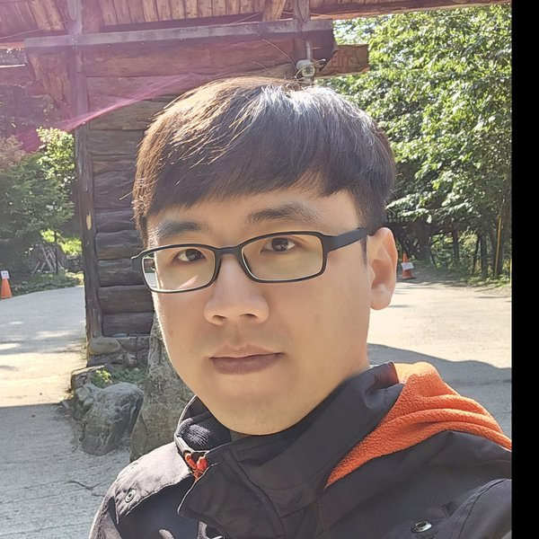
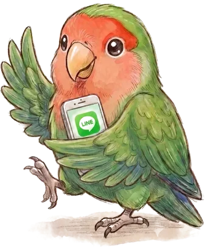

New hierarchical finger-vein feature extraction method for iVehicles
C.-H. Hsia and C.-H. Liu* · I.F. = 4.3 · DOI ↗
👋 哈囉，我是
Johnny Liu
「熱衷於用程式與硬體改變生活、解決難題。」
聯詠科技 Principal Engineer，投入半導體 ATE 測試六年。從京元電子的測試研發工程師，到聯詠的 Senior Engineer，2026 年晉升 Principal Engineer。工作之外對網通設備很有興趣，近年也結合 AI Agent 打造各種客製化內容。

我是 Johnny Liu（劉晉華），目前是聯詠科技（Novatek Microelectronics Corp.）的 Principal Engineer。2020 年自國立宜蘭大學資工所畢業後投入半導體測試，先在京元電子擔任測試研發工程師，2022 年加入聯詠，擔任 Senior Engineer 四年，專注 ATE 測試程式開發（E320、93000K），並於 2026 年 9 月晉升為 Principal Engineer。
大學期間在學校資訊中心打工，研究所期間負責維運系上電腦教室硬體，從中培養了硬體、軟體、網路與實務糾錯的能力。研究所時期主攻影像處理與機器學習，發表過指靜脈辨識與影片浮水印的 SCI 期刊論文，也拿下多項全國電子設計競賽獎項。
我熱衷於用程式與硬體改變生活、解決難題。很慶幸自己經歷過手搓 code 的時代，累積了扎實的基礎；在 AI 爆發的現在，也能快速把新工具融合到所學之中。
工作之外，對網通設備一直很有興趣；近年更開始結合 AI Agent，打造各種客製化的內容與工具，例如在 Home Assistant 上客製家中用電計算與分析、以及各種自動化服務；也自行研究利用 NAS 架設多台虛擬機，運行不同的服務。
新竹市
ATE 測試程式開發（E320、93000K）· 新竹市
苗栗竹南
Master's degree, Computer Science · 在學期間維運系上電腦教室硬體
Electrical, Electronics and Communications Engineering · 在學期間於資訊中心打工
C.-H. Hsia and C.-H. Liu* · I.F. = 4.3 · DOI ↗
H. Prasetyo, C.-H. Hsia, and C.-H. Liu* · I.F. = 3.9

有合作想法或只是想打聲招呼？歡迎來信。